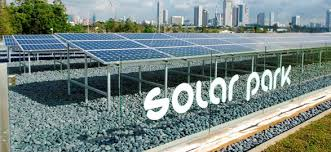
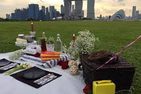
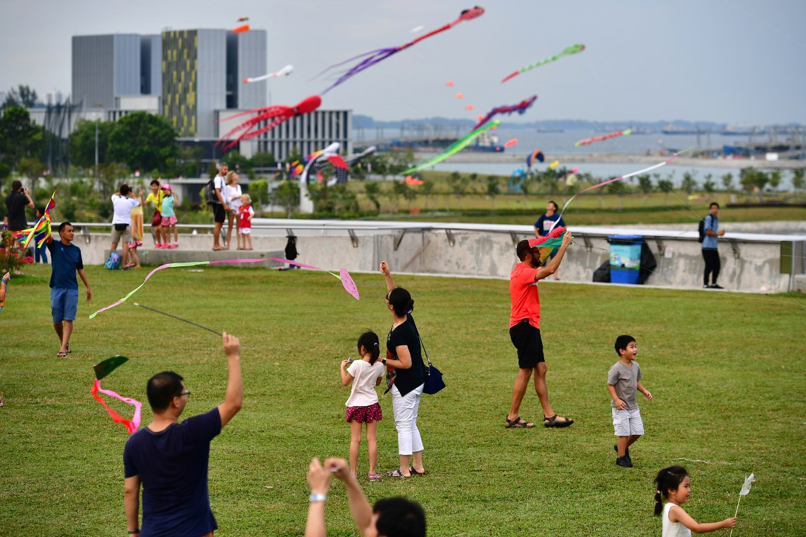
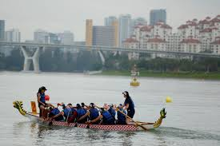
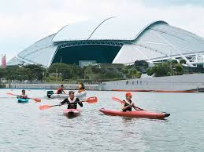

MARINA BARRAGE
To a Greener Country!
Things to do, History and many more! And guess what? It is opened 24 hours!
HISTORY
The Marina Barrage is an ideal spot for a dose of education, mixed with fun in the sun and recreation on the water. Furthermore, it showcases Singapore's push to be a greener country with the largest collection of solar panels! PICNIC & KITE FLYNG
Have a wonderful picnic by Marina Barrage and Enjoy the scenic view
Find a nice spot to lay your mats and enjoy the sunset!
Best time to visit is right before sunset: 7:18pm! But be sure to be there early as it will be crowded
Moreover, it is a wonderful place to bring your kids to fly a kite!

WATER SPORTS
A fantastic location to enjoy water sports to get your adrenaline rush for the day
From dragon boating to kayaking. To find out more about water sports activities
Visit PassionWave by Marina Bay!

